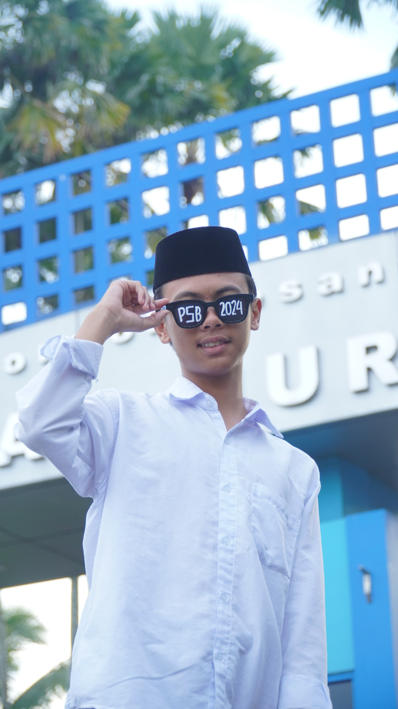
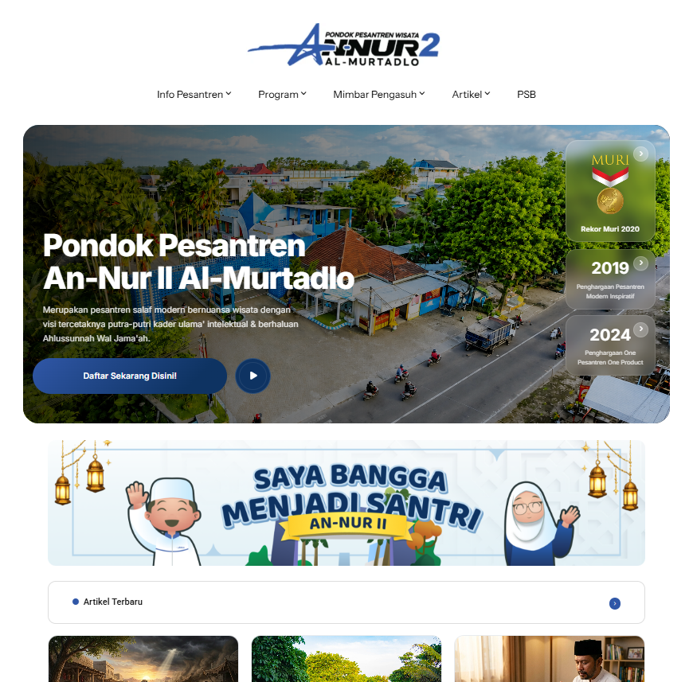
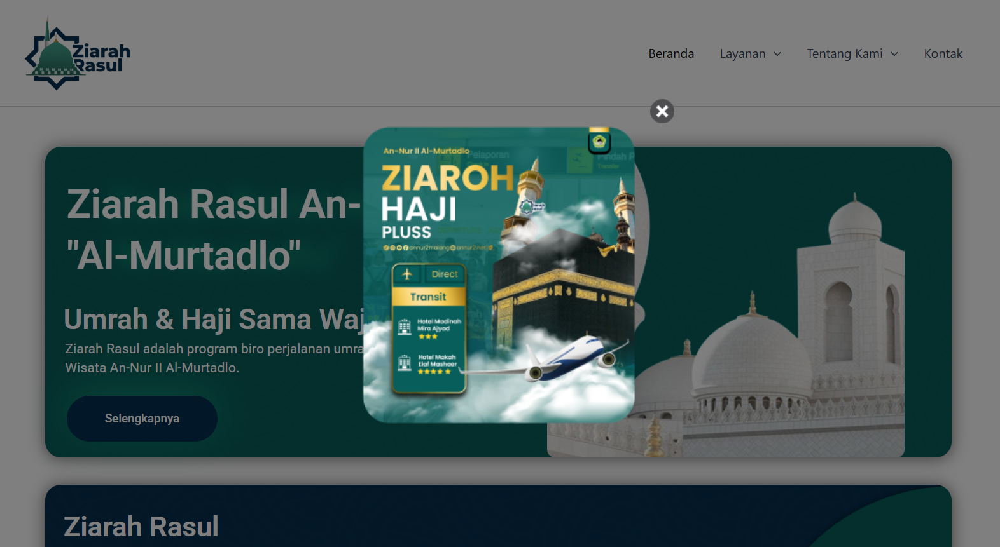
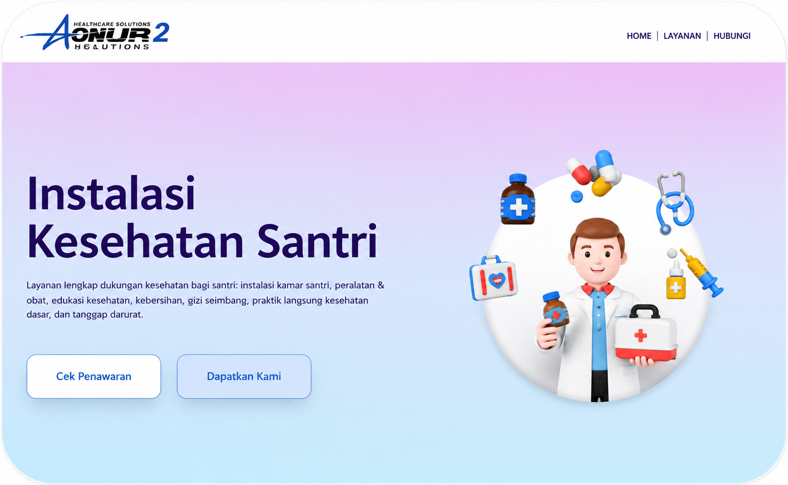
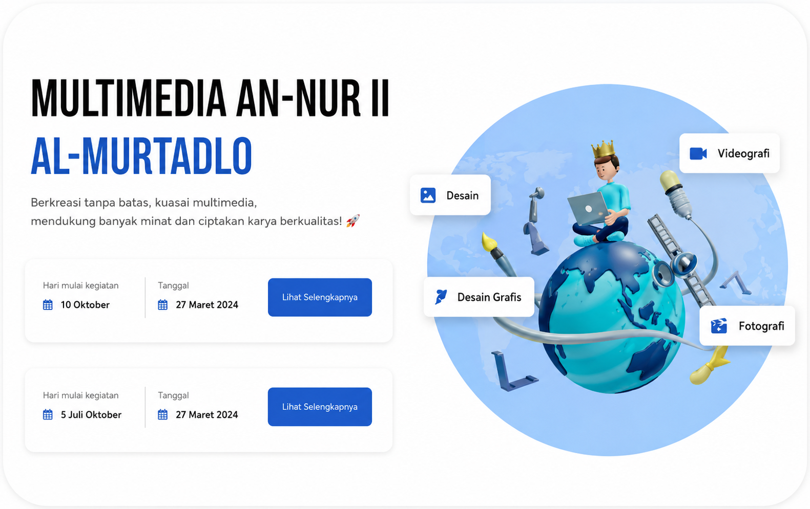

Fadli Iwan Saputra
Saya adalah mahasantri berusia 19 tahun yang tinggal di Kecamatan Lowokwaru, Kota Malang. Selain menempuh pendidikan, saya juga aktif mengembangkan keterampilan di bidang pengembangan website & bisnis exspor.




Keseharian Saya Saat Ini
Saya memiliki minat pada pemasaran digital dan perdagangan internasional. Saat ini saya masih menempuh pendidikan di Ma'had Aly An-Nur 2, saya aktif mengembangkan website bisnis salah satunya website pusat An-Nur 2 serta belajar menjadi exsportir supplier lokal untuk membantu memperluas jangkauan pasar melalui media digital dan peluang ekspor.

Saya sedang melakukan perancangan, pengembangan, dan optimalisasi website resmi di kantor Multi Media untuk mempermudah penyampaian informasi pondok pesantren, pendaftaran santri, publikasi kegiatan, serta meningkatkan kepercayaan dan jangkauan pemasaran digital lembaga.
📌 Mengikuti Event Kopdar Ekspor Malang 2026
Berpartisipasi dalam kegiatan Kopdar Ekspor Malang 2026 untuk memperluas wawasan di bidang perdagangan internasional, membangun jaringan dengan para pelaku ekspor,serta mempelajari strategi pengembangan pasar ekspor bagi produk UMKM Indonesia.
📌 Mengerjakan Website An-Nur 2 Al-Murtadlo
Mengembangkan website profil dan informasi untuk An-Nur 2 Al-Murtadlo dengan fokus pada tampilan modern, responsif, dan mudah diakses. Proyek ini mencakup perancangan antarmuka, pengelolaan konten, serta optimasi pengalaman pengguna agar informasi dapat tersampaikan dengan jelas kepada pengunjung.
📌 Mengerjakan Website Biro Umroh Ziarah Rasul
Mengembangkan website profil dan layanan Biro Umroh Ziarah Rasul untuk memperkenalkan program umroh, paket perjalanan, serta informasi layanan kepada calon jamaah. Website dirancang dengan tampilan modern, responsif, dan mudah digunakan guna meningkatkan kepercayaan serta mempermudah akses informasi bagi pengunjung.
📌 Mengerjakan Website Instalasi Kesehatan Santri
Mengembangkan website Instalasi Kesehatan Santri sebagai media informasi dan layanan kesehatan bagi santri. Website dirancang dengan tampilan modern, responsif, dan mudah digunakan untuk memudahkan akses informasi terkait program kesehatan, layanan medis, edukasi kesehatan, serta kegiatan yang diselenggarakan oleh instalasi kesehatan An-Nur 2.